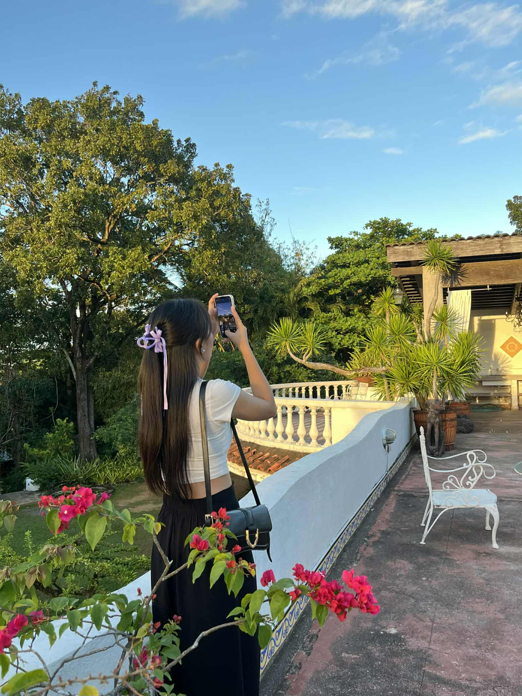
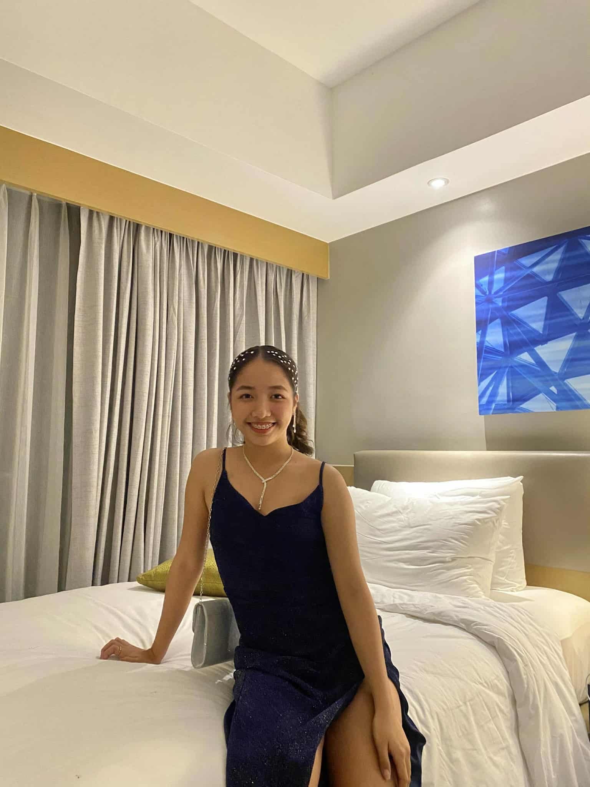
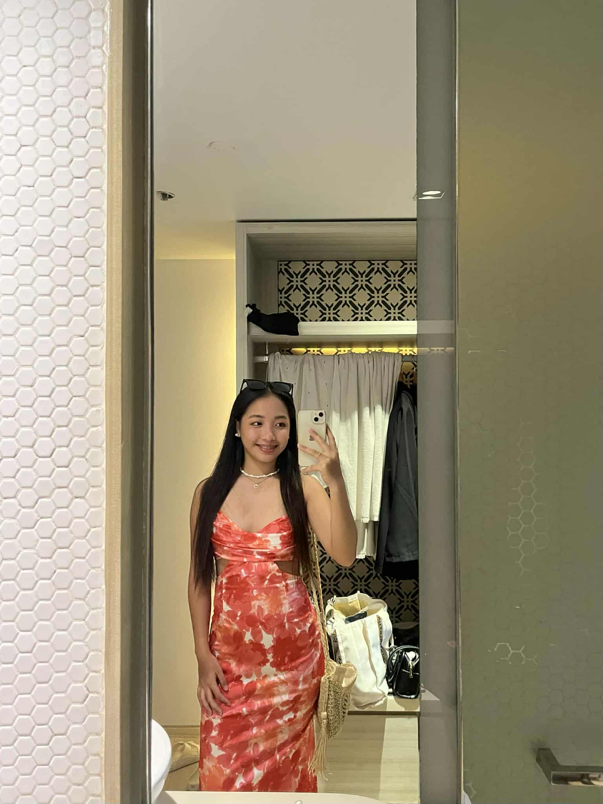
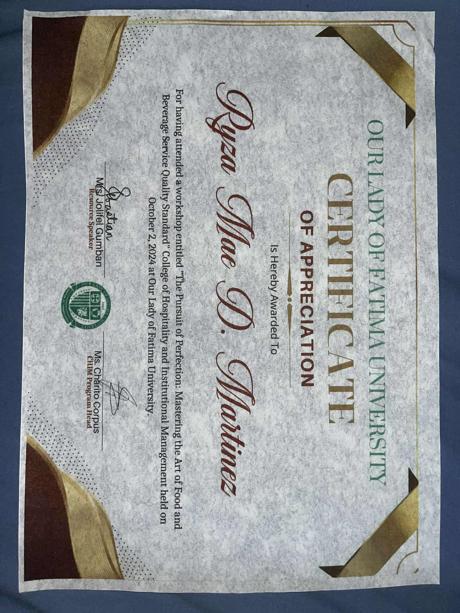
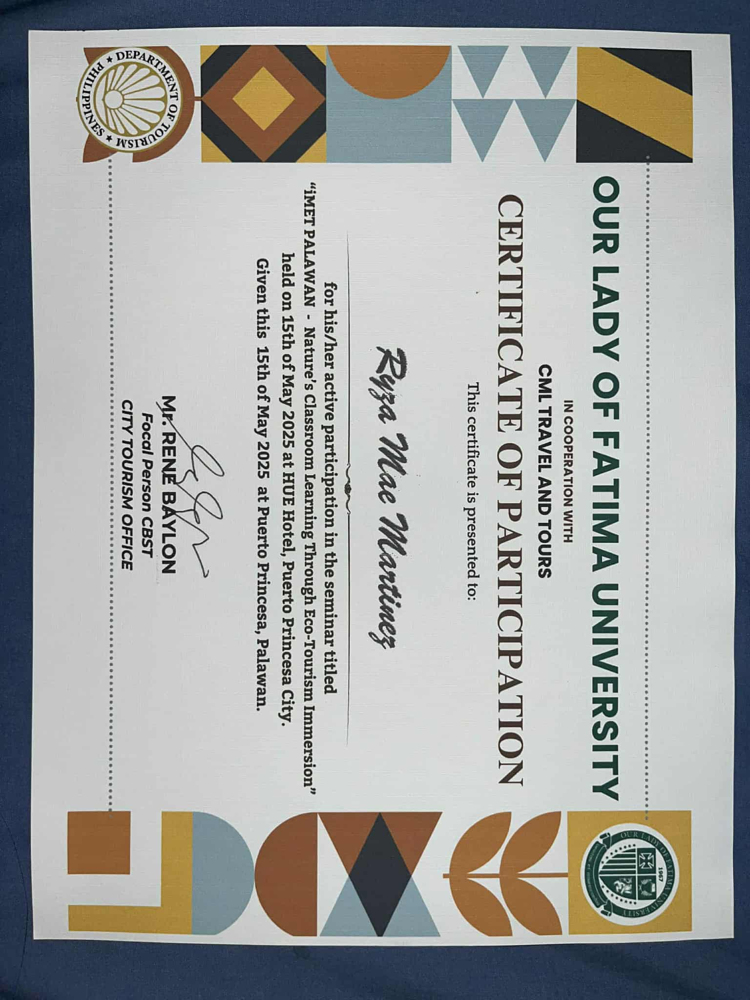
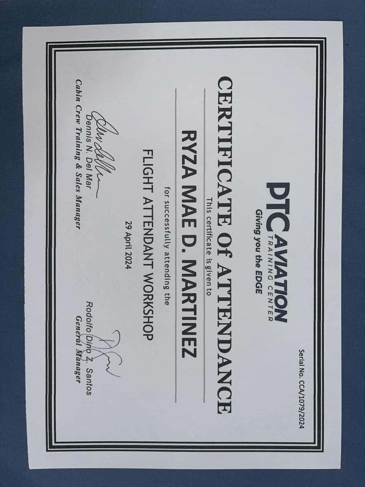
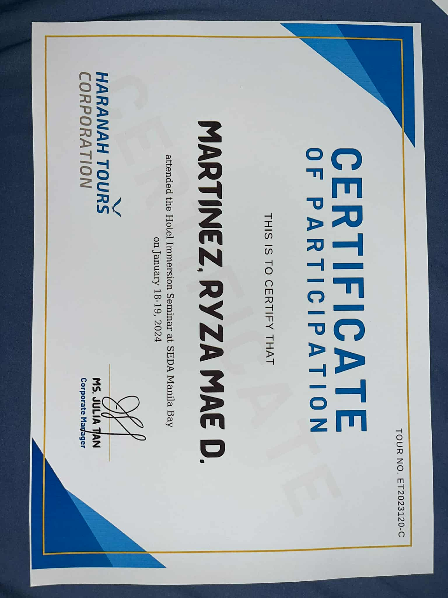
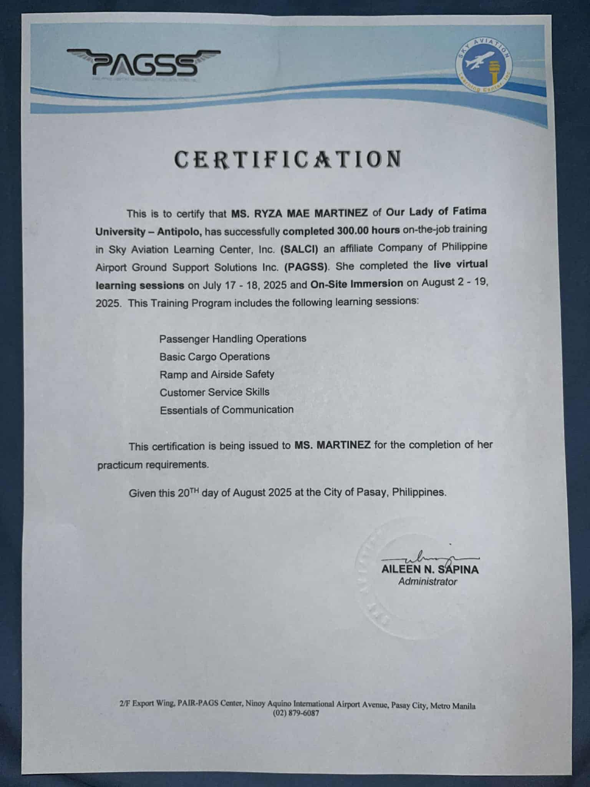

About Me
Hi! I’m Ryza Mae D. Martinez, a 20-year-old student taking a Bachelor of Science in International Tourism Management Major in Travel and Tour Operations at Our Lady Of Fatima University – Antipolo Campus.
I am shy, but if I get comfortable, I show my true personality; friendly, jolly, soft-hearted, and loving. I’m beyond grateful for my family and life.
My hobbies include watching, reading romance books, and listening to music. I love exploring new places and learning about different cultures. My goal is to gain experiences that will prepare me for a successful career in tourism.



Skills & Highlights
Time Management
Positive Attitude
Ability to remain calm in emergencies
Certifications & International Courses




